LES INTERSCTIONS (avec panneau-partie2)

Les panneaux de priorité ponctuelle vous donnent donc la priorité sur les véhicules de gauche et de droite mais seulement à la prochaine intersection. Ces derniers auront un Cédez le passage ou un Stop et vous laisseront donc passer.
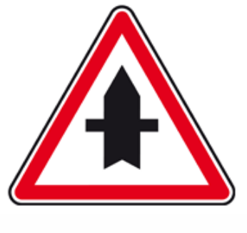 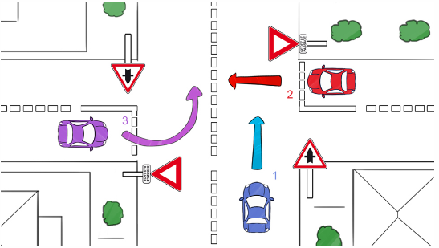Si vous tournez à gauche et que le véhicule en face a aussi un panneau de priorité ponctuelle, c'est encore une fois la priorité à droite qui s'applique car vous avez les mêmes obligations. Dans ce cas, vous cédez le passage.
Le panneau de route à caractère prioritaire vous informe que vous avez la priorité à toutes les intersections. Il est répété à chaque intersection pour le rappeler aux véhicules qui auraient rejoint la route prioritaire après vous par exemple.

Il est implanté tous les 5 km sur route et tous les kilomètres en agglomération.
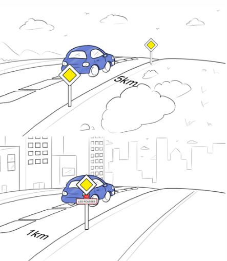Les autres usagers auront un Cédez le passage ou un Stop.
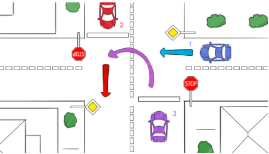Le panneau peut se trouver au-dessus d'un panneau d'agglomération, ce qui signifie que pendant toute la traversée de la ville, vous circulez sur une route prioritaire à toutes les intersections.
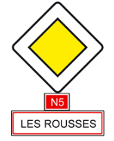Un panonceau peut aussi se rajouter au panneau et précise à une intersection quelle voie reste prioritaire. Ce sera celle représentée par un trait en gras.
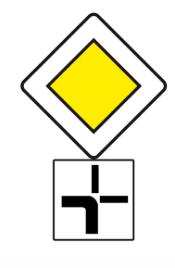Dans le premier croquis ci-dessous, je continue sur la route prioritaire en tournant à gauche donc je passe en premier devant les autres véhicules.
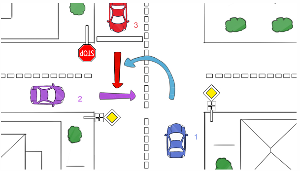Dans le second croquis ci-dessous, je ne suis pas prioritaire car je quitte la voie prioritaire,
comme l'indique le tracé en gras du panonceau.
La voiture de droite, elle, reste sur la voie prioritaire car elle tourne à sa gauche.
Elle est de plus à ma droite donc je la laisse passer.
Je suis néanmoins prioritaire par rapport au véhicule d'en face car il a un Stop.
La fin du caractère prioritaire de la route est signalée par ce panneau spécial barré d'un trait noir. S'il est au-dessus du panneau d'agglomération cela signifie que vous perdez la priorité à toutes les intersections de la ville. La priorité à droite doit alors être respectée.
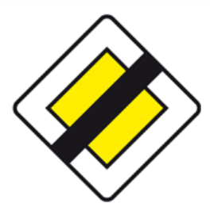 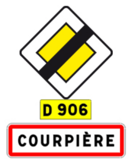Lorsque le trafic est dense et que les intersections sont encombrées, ne vous engagez pas dans l'intersection si vous risquez de bloquer les véhicules de votre droite et de votre gauche désirant passer même si vous êtes prioritaire.
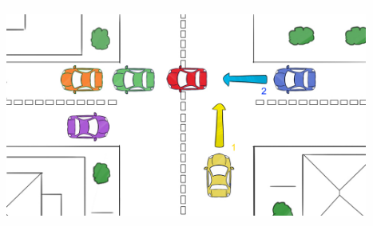 Vous ne devez pas bloquer la circulation même si les autres usagers ont des panneaux
Stop ou des Cédez le passage.
Vous ne devez pas bloquer la circulation même si les autres usagers ont des panneaux
Stop ou des Cédez le passage.
Il peut arriver de trouver des intersections avec des routes en bitume et des chemins
de terre. Vous devez respecter la règle de la priorité à droite même si ces chemins sont en terre car
les routes du domaine public sont parfois en terre. C’est souvent le cas pour les chemins ruraux et les
chemins forestiers.
Ne les confondez donc pas avec des routes privées.
Les routes du domaine public susceptibles d'être en terre sont les suivantes :
En revanche, vous n'êtes jamais prioritaire quand vous sortez d'un lieu privé comme un garage, une maison, un parking ou une station-service. Vous devez céder le passage à droite comme à gauche.
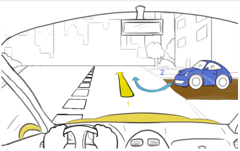Pour bien identifier et repérer la nature de l'intersection, balayez du regard le plus souvent possible
les bords droits de la route pour discerner les indices formels, c'est-à-dire tous les panneaux et marquages
au sol.
En cas de doute sur le régime de priorité d'une intersection, partez du principe que vous devez céder le
passage et ralentissez.
Bon courage pour votre code !